Scalper
A scalp can be over in sixty seconds.Every extra tap is a cost.
When a scalper spots a move, they have seconds — and every tap spent hunting for a chart or a button is money on the line. Scalper is CapMint’s one-screen mode built for that moment: both charts, one-tap Buy Call and Buy Put, live P&L, quick stop-losses and an instant exit, so traders can act on what they see instead of fighting the app.
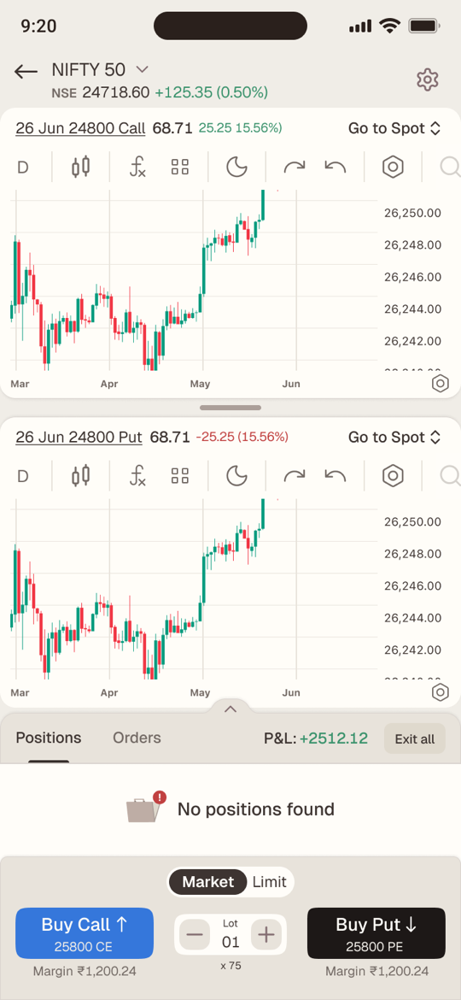
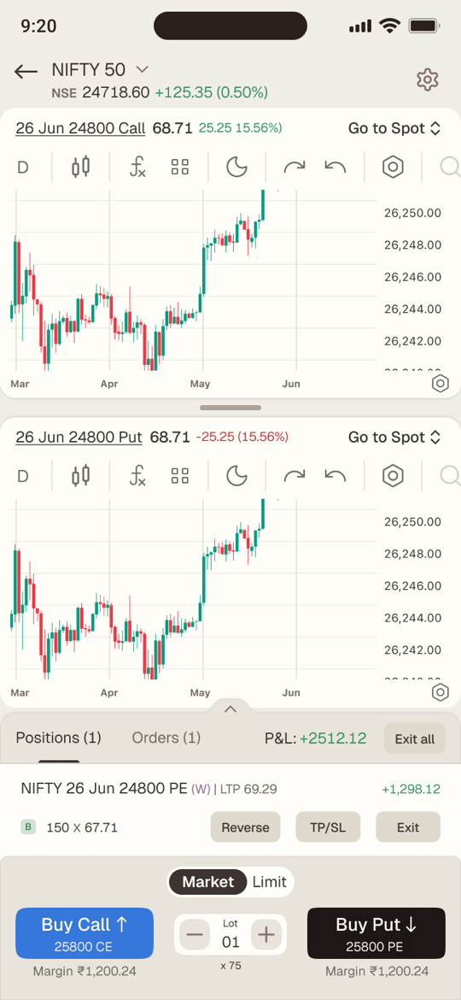
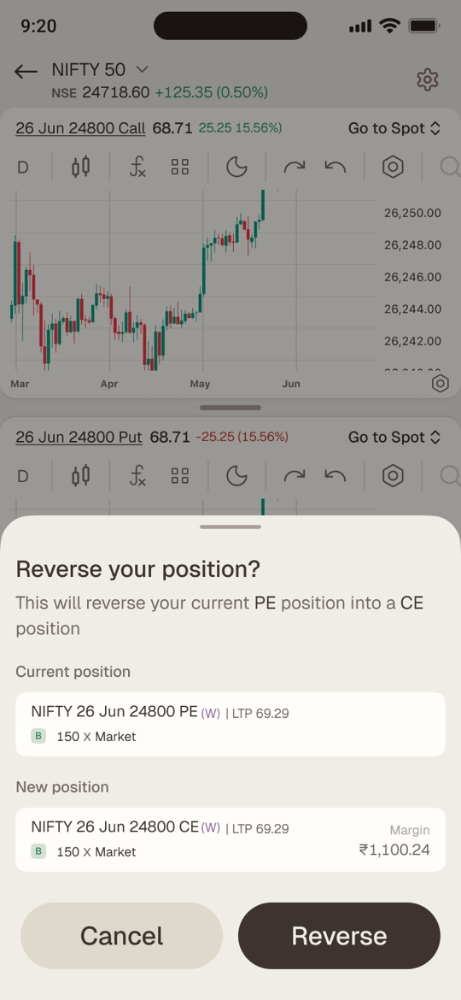
Executive summary
It became the way most of our traders trade
Scalpers make dozens of options trades a day, each lasting minutes, on screens built for investors. Scalper put the charts, a one-tap entry, live P&L, stop-losses and a one-tap exit on a single screen. It shipped on iOS and Android: 80%+ adoption, 40% of total revenue, and more than half of its users trading with it every day.
01 · The problem
Good enough to trade. Not fast enough to scalp.
Every broker lets you place an options order. Very few let you place twenty in an hour without friction. A scalper lives in trades of one to five minutes, and between spotting a move and acting on it, every screen change, form and confirmation is money left on the table — or a loss that ran too long.
We started from six needs a scalper won’t compromise on:
- 01
See the underlying’s chart
- 02
See the contract’s chart without hunting for it
- 03
Go long or short in one tap
- 04
Watch P&L in real time
- 05
Add SL / TP quickly — or automatically
- 06
Exit instantly
02 · Who it’s for
The scalper
How they trade
- Index options, intraday — in and out within minutes
- Many small trades a day, adding to winners
- Reads the underlying and the contract together
- Thinks in direction — up or down — not order types
What breaks their flow
- Switching screens to find a contract’s chart
- Order forms that ask Buy or Sell, CE or PE
- Fiddly lots and stop-losses mid-trade
- Exits that take more taps than entries
03 · Process
From teardown to a shipped flow
Four phases, each one narrowing what the screen had to do.
- 01 · Teardown
I took apart how the leading platforms handle scalping, screen by screen, and sorted every pattern into what to double down on and what to design away (below).
- 02 · Brief
With Sameer, I worked through the brief requirement by requirement — margin refresh, strike selection, confirmations, P&L rules — so each one became a state to design against, not an open question.
- 03 · Flow
One screen, 27 states: the happy path told as five moments of a trade, and every way it can go wrong — rejected orders, half-finished reversals, nine-digit numbers.
- 04 · Ship
The flow went to engineering with its rules and edge states spelled out, and Scalper shipped on iOS and Android.
Teardown findings
Double down
“Buy Call” and “Buy Put”, not Buy and Sell
That’s how a trader thinks: long or short the market.
Overall P&L, always visible
It decides how far to push the rest of the day.
Live position monitoring
Crucial whenever the chart isn’t showing it.
Positions, SL and TP on the chart
The trade lives where the eyes already are.
Design away
Hard-to-change lots
Lot size moves with every contract and every price.
Hard exits
Closing is the most important step of the trade.
Fiddly TP / SL
They’re the guardrails of a scalp.
No trailing stop-loss
Scalpers add to winners and need the stop to follow.
Traders don’t think in buy and sell.They think up or down.
So the two biggest buttons on the screen say exactly that — Buy Call ↑ and Buy Put ↓ — each with the strike it will buy printed inside it.
04 · Key decisions — the anatomy of a scalp
One trade, five moments
Instead of designing features, I designed the sixty seconds of a single scalp — and asked what the trader needs at each moment, and what must get out of the way.
-
Read
Two charts, one glance
The underlying and the Call chart open together by default, on a 1-minute timeframe that’s remembered for each underlying. Every chart header carries its contract, price and change, plus a switcher to flip between Spot, Call and Put.
- Drag the handle to shrink one chart and focus on the other
- Drag it to the floor and it collapses; one tap brings it back
- Upper chart cycles Spot → Call → Put, lower chart Call → Put → Spot
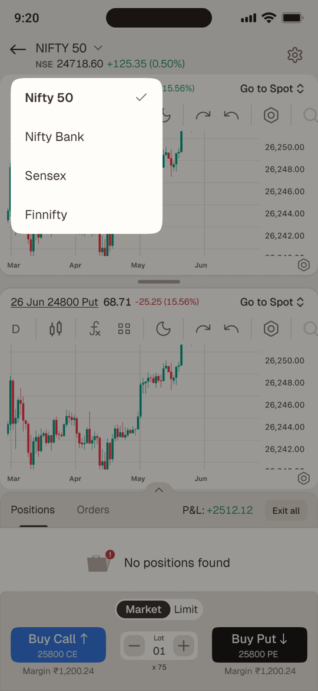
-
Decide
Everything you need to commit, under your thumb
Margin sits under each button and refreshes every five seconds — and instantly whenever lots change. Lots live in a stepper between the two buttons, starting from the default you set per underlying. And each button prints the exact strike it will buy, so nothing about real money is hidden.
Which strike does each button buy?
Charts open Buy Call Buy Put Rule Spot + 25000 CE 25000 CE 25000 PE One option chart — both strikes come from it 25000 CE + 25500 PE 25000 CE 25500 PE One CE and one PE — each button uses its own chart 25000 CE + 26000 CE 26000 CE 26000 PE Both the same type — use the chart changed last Spot + Spot ATM CE ATM PE No option chart — load at-the-money strikes 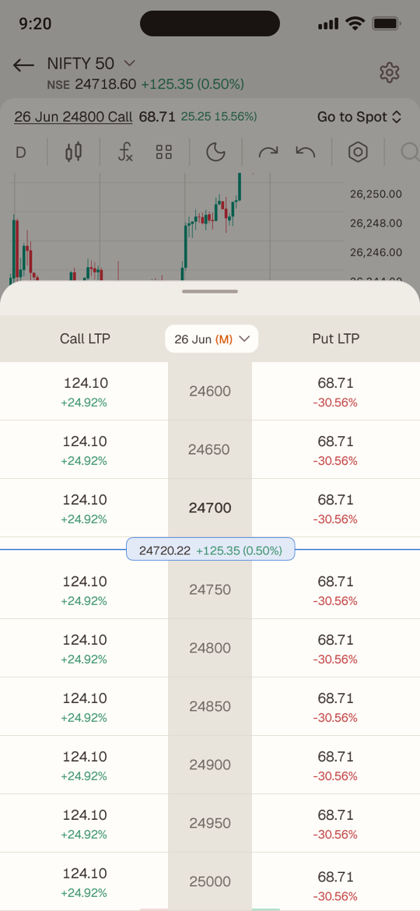
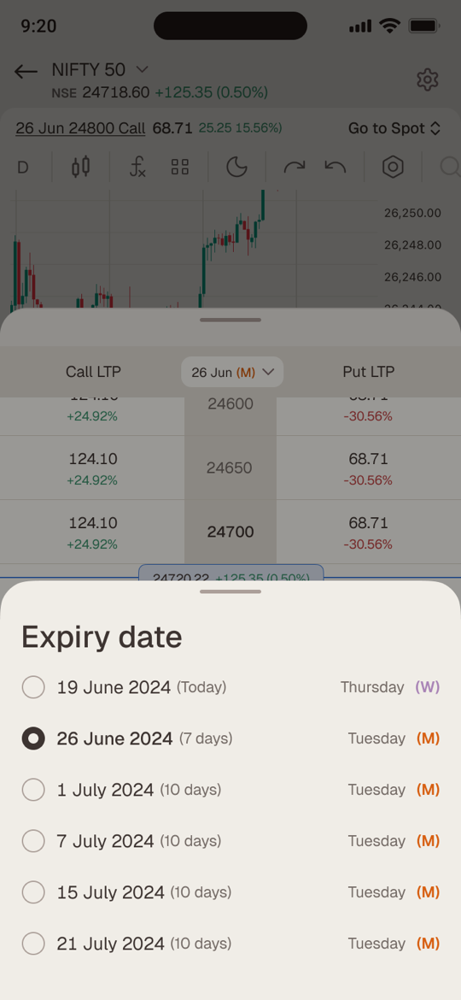
-
Enter
One tap, then proof
Buy Call ↑ or Buy Put ↓ places the order at market, or at your price with Limit. A toast confirms it executed or explains why it didn’t, and the position lands in the sheet at once. If you bought a Call and no Call chart is open, the lower chart switches to it — so you’re always watching what you own.
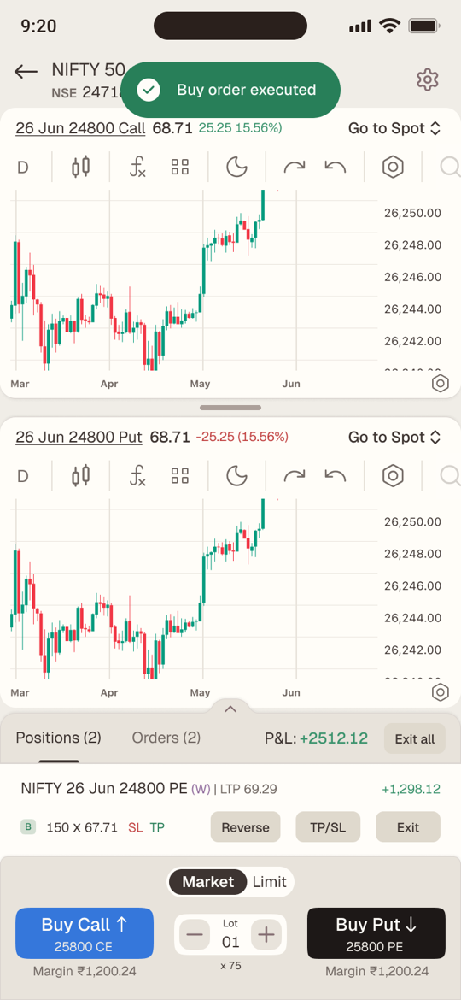
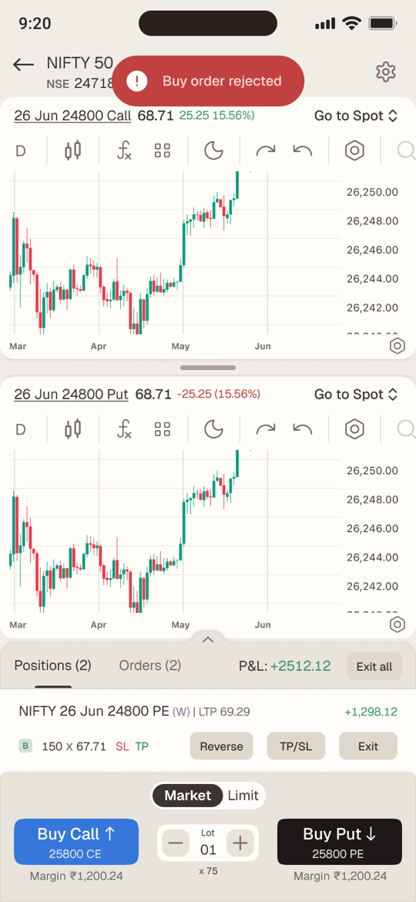
-
Guard
Guardrails that don’t slow you down
Each position shows its live P&L and LTP; the sheet header holds the overall intraday P&L for this underlying only. TP/SL is one tap away on every position — or automatic, set once in settings as a percentage or points, with a trailing stop that follows the trade.
- Active SL and TP appear as tags on the position
- The sheet expands to show every position, with a fixed maximum height
- Long P&L figures drop their decimals above ₹9,99,99,999
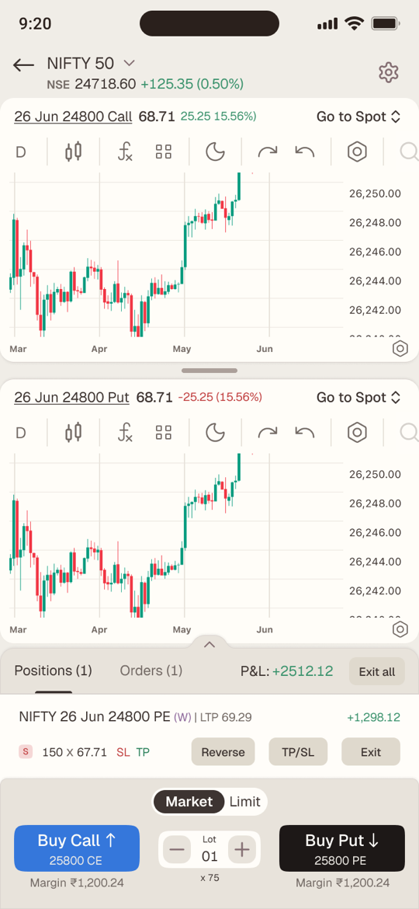
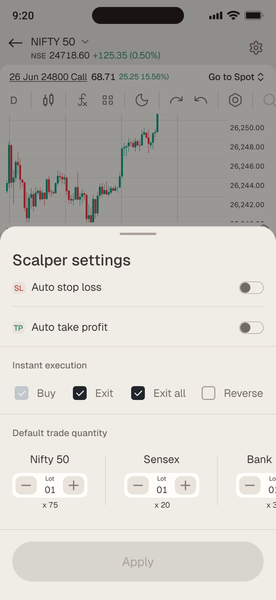
-
Exit
Out in one tap — or flipped
Exit closes one position, Exit all closes everything. Reverse exits and re-enters the opposite side at the same strike, expiry and quantity — strictly in sequence, so step two only fires if step one succeeds. If it can’t, the toast says exactly what happened.
- “Position reversal executed” / “Position exited, but reverse order rejected”
- Margin turns red on the confirmation when it’s more than you have
- Confirmations are on by default; Instant execution turns them off per action
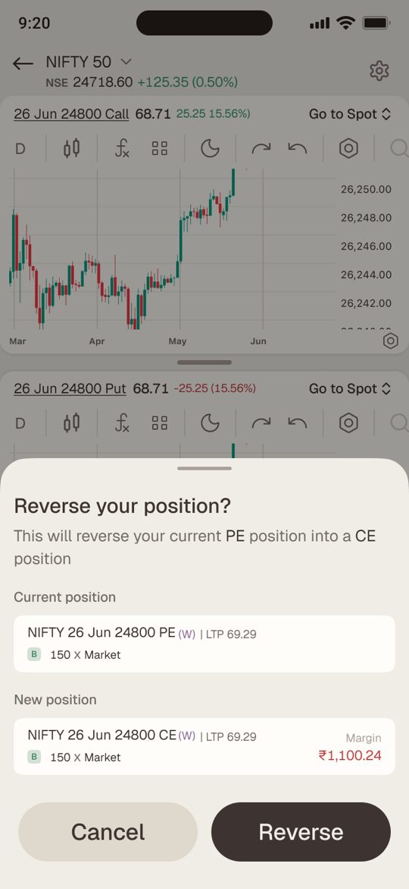
05 · Roads not taken
The obvious options, and why we didn’t take them
| The obvious option | Chose | Why |
|---|---|---|
| Buy and Sell buttons | Buy Call ↑ / Buy Put ↓ | Scalpers think in direction; one tap shouldn’t need a second decision |
| Auto-pick the strike silently | Print the strike on the button | Real money should never move on a hidden choice, and an A/B test backed it |
| One chart with tabs | Two charts, resizable | The underlying and the contract are read together, not in turns |
| Always confirm — or never | Confirm by default, instant per action | Safe for a new trader, fast for an expert who opts in |
| Exit, then re-enter by hand | One-tap Reverse, strictly in sequence | Flipping a view is a scalping move; step two only runs if step one fills |
06 · Tested, not assumed
Should the button say which strike it buys?
Version A kept the buttons compact and left the strike to the chart header. Version B printed it on the button, because real money moves on that one tap. We showed each version to 1,000 traders.
Version A
Strike in the chart
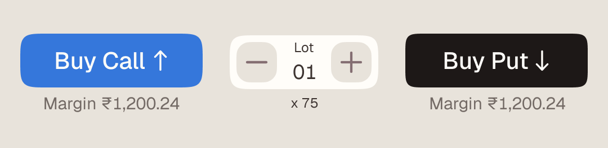
200of 1,000 tapped Buy
Version B
Strike on the button
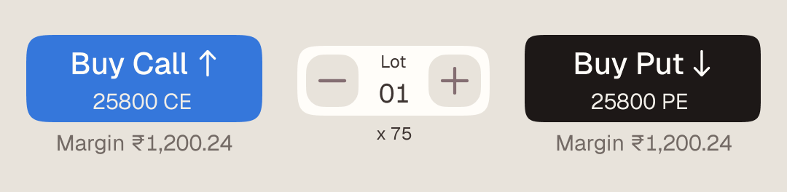
260of 1,000 tapped Buy
+30%more traders tapped to buy with B
- 1,000 per version
- p < 0.01
- B shipped
Each dot is 20 traders. Tapped Buy means a tap on Buy Call or Buy Put.
07 · Designed for the worst minute
A third of the 27 states are about things going wrong
A scalping screen is judged on its bad moments: a rejected order, a typo in a stop-loss, a P&L with nine digits. Each one got a designed state instead of a fallback.
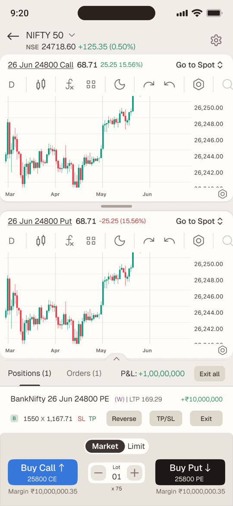
Nine-digit numbers
Margins and P&L in the crores still fit their slots without breaking the row.
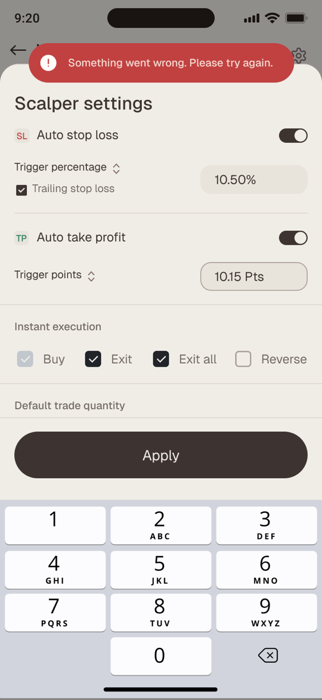
When an order fails
A plain-language toast says what went wrong — never just “error”.
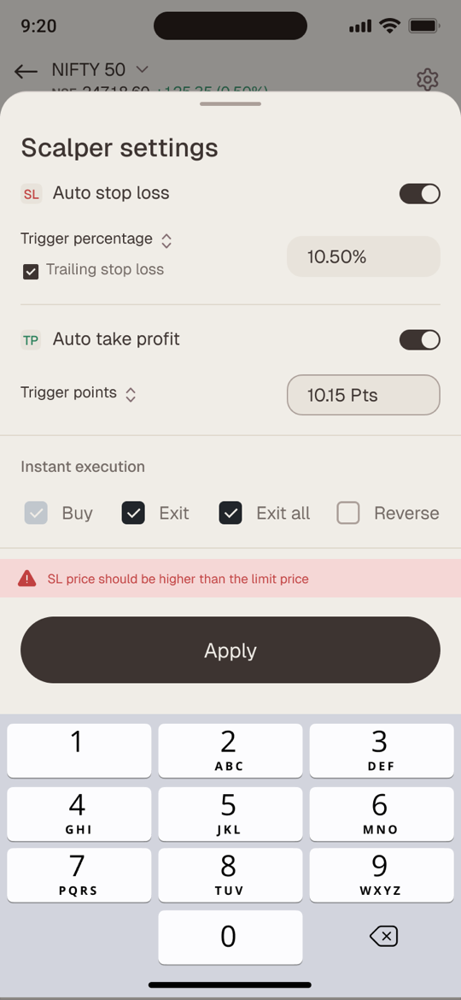
When an input is wrong
Inline validation stops a stop-loss that can never trigger.
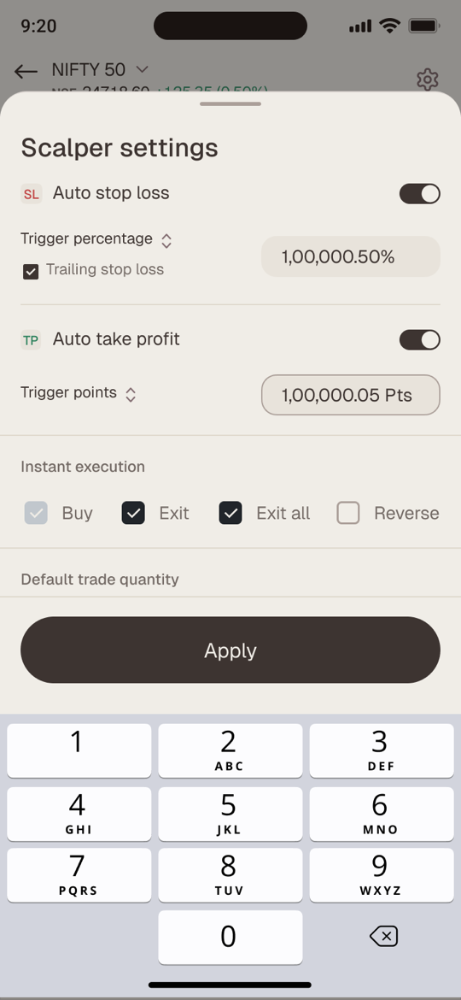
Typing a value
Settings take numbers on a numeric pad, with the field kept in view.
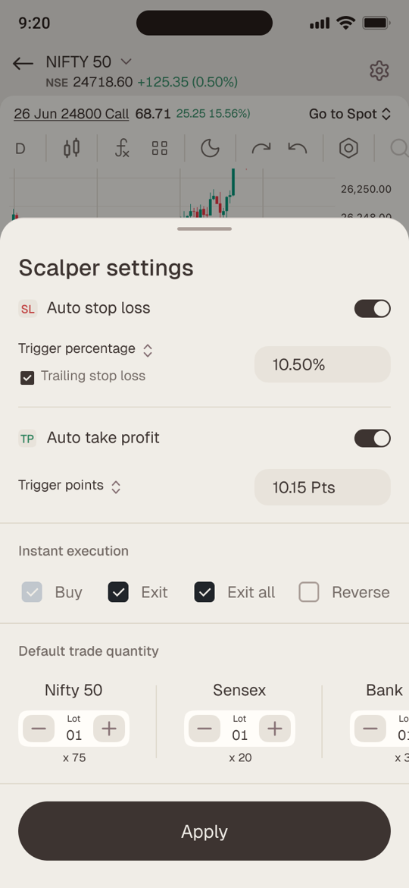
Auto SL & TP set
Percentages or points, with a trailing stop that follows the trade.
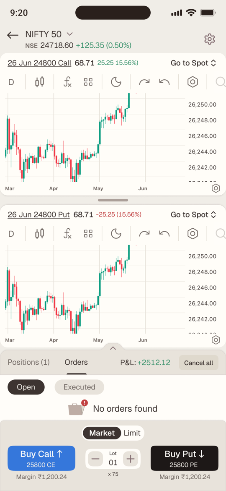
Nothing yet
Empty states that tell you what will appear here, not just that nothing has.
08 · Speed with consent
Fast should never mean reckless.Safe by default, instant by choice.
Every action that moves money — Buy, Exit, Exit all and Reverse — asks for confirmation out of the box. Traders who’ve earned the speed turn on Instant execution for each action separately in Scalper settings. The default protects a new user; the switch respects an expert one.
- Confirm · Buy
- Confirm · Exit
- Confirm · Exit all
- Confirm · Reverse
09 · Outcomes & impact
One screen, two-fifths of the revenue
Adoption
80%+More than 80% of traders adopted Scalper for their F&O trading.
Revenue
40%Two of every five rupees of total revenue came through Scalper.
Daily habit
50%+More than half of its users came back to trade with it every day.
Reverse
5%5% of users reversed a position — a brand-new behaviour for most traders.
10 · Reflection
What this project taught me
Design the moment, not the feature.
Framing the work as sixty seconds of one trade decided what earned a place on the screen and what moved into settings.
Name the money.
The strike is printed on the button and the margin sits under it. When real money moves, nothing should be a surprise.
The edge states are the product.
Rejected orders, half-finished reversals and nine-digit P&L were designed as carefully as the happy path — because that’s when a trader decides whether to trust the screen.
A brief is a design tool.
Working through the requirements one by one with Sameer turned acceptance criteria into states — so engineering never had to guess what should happen when something went wrong.